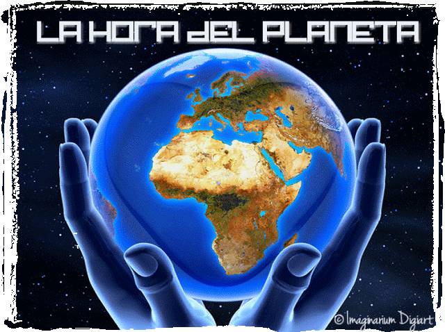

BLOQUES
BLOQUE I
BLOQUE II
BLOQUE III
ANIMALES
KOALA
ZORRO
VIDEOS
ENERGIAS RENOVABLES
¿COMO RECICLAR LLANTAS?
ECOSISTEMAS
EL KOALA

EQUIPO CAMPAMOCHA
MARTIN RICARDO ALMEIDA SANCHEZ
MIGUEL ANGEL CARRILLO MUÑOZ
JAVIER EDUARDO GUERRA CANO
¡Bienvenido al portal interactivo de ecologia y medio ambiente!